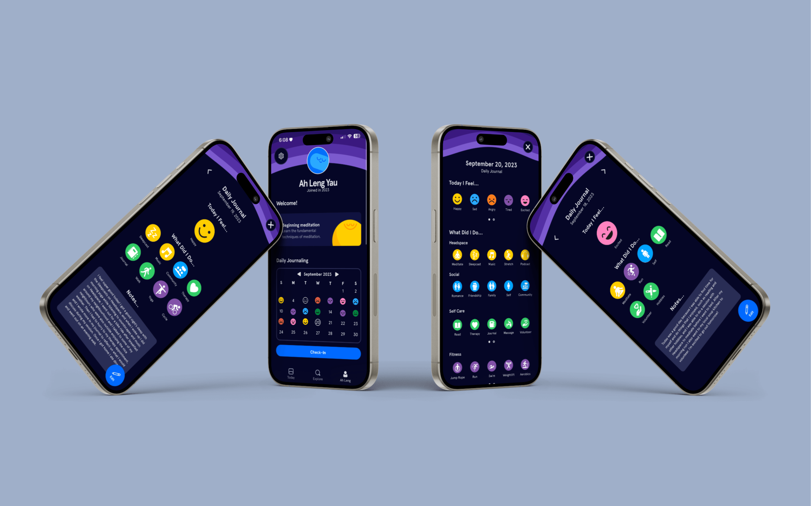
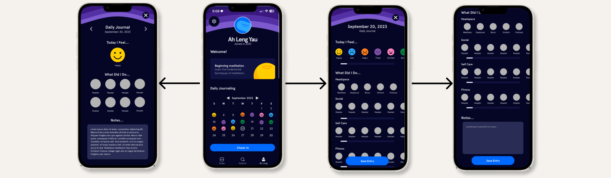

Headspace Feature Design
Solo Assignment at SFU

Project Overview
In this solo project, I created a new feature for the popular meditation guidance app Headspace and pitched the concept in class. I ideated, researched, designed and prototyped a feature that involved daily journaling on Headspace, allowing users to track their emotions, daily activities relating to self care, social life, fitness, and Headspace-related activities, and gave users a space to write notes down about their day.
Process Analysis
I spent time analyzing the current app, by myself and through other users to find out the wants and needs of users and features I could potentially add. I found two users of Headspace and asked them questions pertaining to what they like about the app, what they don’t like, what they feel is missing and how they use the app regularly. I found that users felt that Headspace was missing a personalized aspect that catered to a user’s journey with mediation and their mental health.
From the feedback I received I came up with two potential ideas a tailored for you page for users that showed user’s Headspace content that catered to what they had previously viewed, and Headspace journaling. I decided to move forward with the journaling feature as I felt it met more user needs, allowing users to track their personal growth, and goals. Using Headspace’s current UI styling I created elements and wireframes that were seamless and consistent with the current interface of the Headspace app, and moved them to Protopie to add user interactions and create my final prototype.
Project Conflicts and Solutions
This project allowed me to increase my skills in prototyping. In doing so, I had to learn how to use a new software “Protopie” to build my prototype, which proved to be difficult for me. I gave myself a lot of time to work out any issues in my prototype and research tutorials on how to use Protopie. Reflecting on this project I would have wanted to add more educational features to my journaling feature, potentially allowing users to understand the benefits of the different activities listed in the daily journal, or what to do when they track a certain emotion (ex. how to feel better when a user tracks that they feel sad).
Project Reflections
This project allowed me to vastly increase my prototyping abilities and user research skills. Before this project I had yet to explore and use Protopie, and this project allowed me to learn and become sufficient in the program. Prototyping is an extremely valuable skill, as it allows designers to better communicate their interfaces and how they will work, outside of static deliverables such as wireframes and storyboards.
Looking back on this project I would have liked to add a more educational element to the Daily Journal, which would allow users of Headspace to be informed on what information they are logging and why it is beneficial to exercise some of the traits listed in the feature. This way Headspace would be providing a place for users to learn about their progress.
I would have also liked to add a recommendations tab/element that recommended meditation sessions to users based on what they logged on a specific day, or based on an accumulation of recent logs. This element would have further appealed to the user research I had completed earlier and allowed users to easily find and navigate the large variety of sessions Headspace provides.
Project Roles
Visual Design, Prototyping, User-Testing, Research
Project Members
- Lauryn Yau
Project Artifacts


Headspace Mockups
User Flow
Prototype Walkthrough